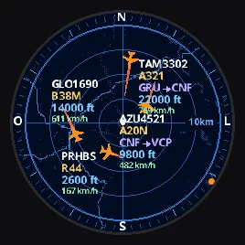
ESP Plane Radar
Radar de aviões ao vivo com mapa da sua região, clima animado com previsão de 5 dias e 12 horas, relógio com modo noite, calendário com feriados, Google Agenda, avião mais próximo com alerta “sobre você”, resumo do dia e qualidade do ar — numa telinha redonda com ESP32-C3. Instale direto pelo navegador, sem programar nada.
1. Escolha a versão e instale
Use o Chrome ou o Edge no computador e conecte a placa com um cabo USB-C de dados.
Montagem original
Fio DC da tela no GPIO10 (igual ao projeto ESP32-Plane-Radar original).
Variação DC no GPIO2
Algumas unidades prontas ligam o DC no GPIO2. Se com a outra versão a tela ficar preta (com brilho fraco), instale esta.
Se a placa não aparecer na lista: segure BOOT, aperte e solte RESET, solte BOOT e tente de novo. Se continuar sem aparecer, troque o cabo (muitos só carregam).
2. Configure pelo celular
- A tela mostra “Configurar Wi-Fi”. No celular, entre na rede
PlaneRadar-Setup. - Abra
http://192.168.4.1(costuma abrir sozinho) → Configurar Wi-Fi. - Escolha a sua rede, digite a senha e preencha a latitude/longitude do lugar (no Google Maps, segure o dedo no mapa e copie os números). Salve.
- Depois, para mudar algo, abra
http://plane-radar.localcom o celular no mesmo Wi-Fi.
3. Use o botão BOOT
- Toque: próxima tela.
- Dois toques: no radar muda o zoom (5 → 10 → 15 → 25 → 50 → 100 km); na tela “avião mais próximo” muda o raio de busca (5 → 10 → 20 → 50 km); em “próximos dias” alterna dias/horas; no calendário vai para o próximo mês; na agenda atualiza na hora.
- Segurar 3 s: apaga o Wi-Fi e volta para a configuração.
As telas
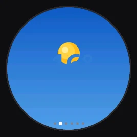
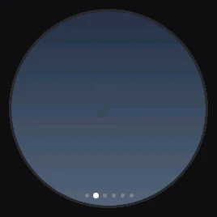
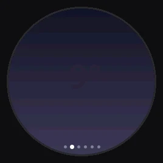
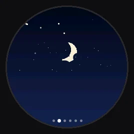
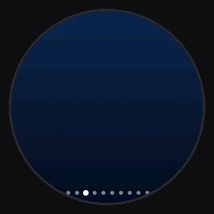
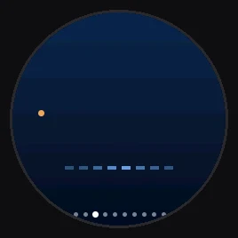
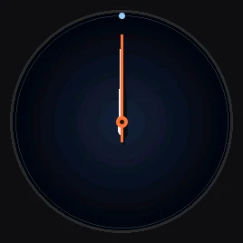
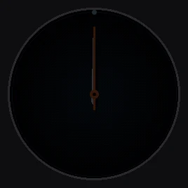
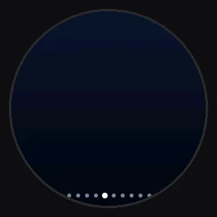
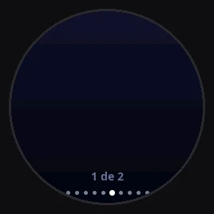
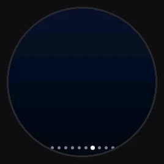
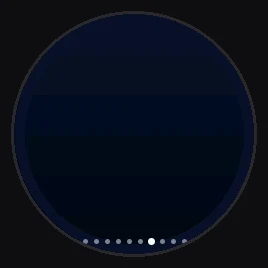
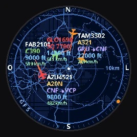
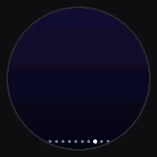
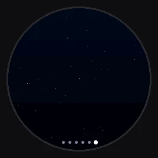